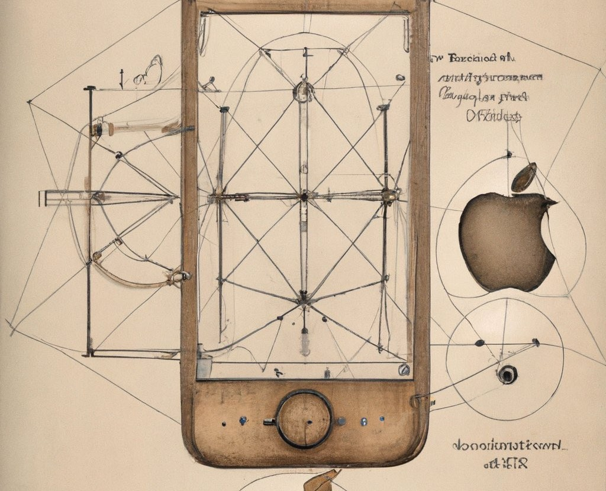
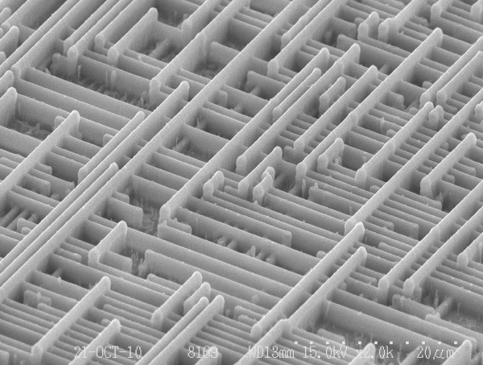
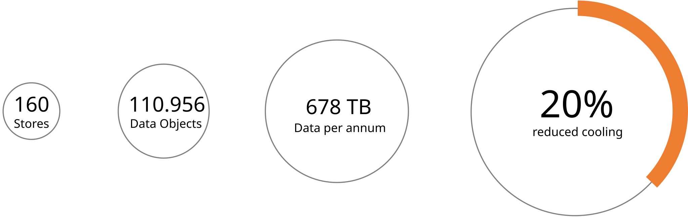

Computerhardware
Joern Ploennigs · AI4SC
cf. ‘Man Computer’ by Fritz Kahn
Definition: Computer
Computer
Ein Computer ist ein Gerät, das mittels programmierbarer Rechenvorschriften Daten verarbeitet
Hörsaalfrage
Welche Computer-Arten gibt es?
Computerarten
Hochleistungsrechner
- Supercomputer: viele CPUs und GPUs, hochparallel (z.B. Wettersimulation)
- Mainframe: Großrechner mit höchster Zuverlässigkeit (z.B. Banken)
- Server: Rechenzentrum ohne Bildschirm (Internet, Cloud)
Personal- und Mobilgeräte
- PC: Desktop für Arbeit und Freizeit
- Laptop: mobil arbeiten, spielen, studieren
- Smartphone: Touchscreen, wenig Telefonfunktion
- Tablet: viel Touchscreen, ohne Telefonfunktion
Eingebettete Systeme
- Kleine Rechner in Autos, Robotern und Smart-Homes
- Oft ohne Bildschirm und Tastatur
- Messen, steuern, regeln, z.B. Sensoren im Bauwerk
Hörsaalfrage
Aus welcher Hardware besteht ein Computer?

Computer Aufbau

Die Kernmodule eines Computers sind:
- die CPU (Central Processing Unit) als zentrale Recheneinheit,
- die GPU (Graphics Processing Unit) für graphische Anwendungen,
- der RAM (Random Access Memory) als Arbeitsspeicher und
- eine Festplatte (HDD) oder ein Solid State Drive (SSD) als dauerhafter Speicher.
- das Mainboard mit dem Kommunikationsbus welches alle Teile verbindet.
Computer Aufbau – Speicherdauer

Der Computer hat ähnliche Gedächtnisarten wie der Mensch:
- CPU und GPU haben kleine Register und Cache Speicher (Ultra-Kurzzeitgedächtnis)
- Der RAM ist ein volatiler Speicher, d.h. der Inhalt geht beim Ausschalten verloren (Kurzzeitgedächtnis)
- Die HDD/SSD ist ein permanenter Speicher, d.h. der Inhalt bleibt erhalten (Langzeitgedächtnis)
Je schneller der Speicher, desto kleiner ist er
- Die Speicherarten unterscheiden sich in Zugriffszeit und Kapazität um viele Größenordnungen
- Schnelle Speicher sind teuer > klein
- Langsame Speicher sind billig > groß
CPU – Central Processing Unit
- Die CPU ist die Recheneinheit des Computers, um Daten zu verarbeiten
- Sie bearbeitet eine Sequenz an Befehlen (Ein Programm)
- Eine CPU besteht aus Milliarden an Transistoren die nur wenige Nanometer (1000000nm=1cm) groß sind
- Wenige Transistoren können nur eine einzelne logische Operation berechnen

Binär: Die Hardware speichert alles als Bits
- Transistoren unterscheiden nur zwei Zustände: 0 und 1
- Computer speichern, verarbeiten & kommunizieren Daten deshalb als binären Zahlen
- binarius: zweifach, doppelt. Das kleinste nützliche Zahlensystem
- Alles liegt als Folge von Bits im Speicher: Code, Zahlen, Text, Bilder und Videos
Merksatz
Alle Werte werden in der die Hardware in Bits ablegt und binär verarbeitet.
Der Datentypen legen fest, wie diese Bits zu interpretieren sind: als Zahl, Text oder Farbe.
| Binär | Bedeutung |
|---|---|
| 0 | Aus / Falsch |
| 1 | An / Wahr |
Achtung: Der Unterschied im Computer
Die SI-Einheiten kB/MB/GB sind auf Basis 1000 definiert. Betriebssysteme zeigen Dateigrößen jedoch traditionell auf Basis 1024 an, oft noch unter den alten Namen. Seit 1998 legen IEC-Präfixe (KiB, MiB, GiB) diese 1024er-Stufen eindeutig fest.
| Einheit | Dezimal (SI) | Binär (IEC) | Bytes (IEC) |
|---|---|---|---|
| Kilo | 1 kB = 10³ B | 1 KiB = 2¹⁰ B | 1.024 |
| Mega | 1 MB = 10⁶ B | 1 MiB = 2²⁰ B | 1.048.576 |
| Giga | 1 GB = 10⁹ B | 1 GiB = 2³⁰ B | 1.073.741.824 |
| Tera | 1 TB = 10¹² B | 1 TiB = 2⁴⁰ B | 1.099.511.627.776 |
Hörsaalfrage
Wie weit kann man mit 10 Fingern zählen?
Binäre Zahlen – Ganze Zahlen
- Dezimalzahlen lassen sich als Binärzahlen codieren
- Binärzahlen erlauben dieselben Grundrechenarten wie Dezimalzahlen: Addition, Subtraktion, Multiplikation und Division
- Im Computer werden Zahlen oft hexadezimal (Basis 16) geschrieben: Ein Byte (8 Bit) passt dann in 2 Zeichen
| Dezimal | Binär | Hex |
|---|---|---|
| 0 | 0000 | 0 |
| 1 | 0001 | 1 |
| 2 | 0010 | 2 |
| 3 | 0011 | 3 |
| 4 | 0100 | 4 |
| 5 | 0101 | 5 |
| 6 | 0110 | 6 |
| 7 | 0111 | 7 |
| Dezimal | Binär | Hex |
|---|---|---|
| 8 | 1000 | 8 |
| 9 | 1001 | 9 |
| 10 | 1010 | A |
| 11 | 1011 | B |
| 12 | 1100 | C |
| 13 | 1101 | D |
| 14 | 1110 | E |
| 15 | 1111 | F |
Binäre Addition
- Zerlegung in Addition der Stellen mit Übertrag
- Mensch: Addition einzelner Zehnerpotenzen + Übertrag
- Computer: Addition einfacher Bits + Übertrag
- Bitaddition: Übertrag nur bei \(1+1\)
- Realisierung: XOR-Gatter (Summe) + UND-Gatter (Übertrag)
Binäre Multiplikation
- Zerlegung in Multiplikation der Stellen mit Addition
- Mensch: Zerlegung nach Zehnerpotenzen, Anhängen von 0 + Addition
- Computer: Zerlegung nach Zweierpotenzen, Anhängen von 0 + Addition
- Binärdarstellung → enthaltene Zweierpotenzen direkt sichtbar
- Multiplikation mit \(2^n\) → Bitverschiebung um \(n\) Stellen
- Realisierung: UND-Gatter (Bitmultiplikation) + Addierer
Binäre Zahlen – Gleitkommazahl
- Reelle Zahlen können im Computer nicht exakt dargestellt werden, da sie unendlich viele Nachkommastellen haben können (z. B. \(1/3\), \(\pi\))
- Computer verwenden daher näherungsweise Gleitkommazahlen (floating point) in Exponentialschreibweise: \(\pm m \times 2^e\)
- Zerlegung: Vorzeichenbit, Exponent (mit Bias), Mantisse (binär)
Achtung
Begrenzte Anzahl an Stellen: Es entstehen Rundungsfehler!
Binäre Zahlen – IEEE 754
- Der Standard legt fest, wie viele Bits Vorzeichen, Exponent und Mantisse bekommen: 16, 32 oder 64 Bit
- Exponent mit Bias (15, 127, 1023): 3 + Bias, binär gespeichert
- Mantisse ohne führende 1, mit Nullen aufgefüllt
- Python
float= 64 Bit

Abbildung von Zeichen im Computer
- Buchstaben in Texten werden im Computer binär codiert
- ASCII: Textzeichen gespeichert in 8 Binärwerten (8 Bit = 1 Byte)
- Binäre Codierung zieht sich vom niedrigsten Hardwarelevel bis hoch zur alltäglichen Anwendung
Jedem Buchstaben ist eine Zahl zugeordnet, die wiederum binär codiert wird. Zum Beispiel:
| Zeichen | Dezimal | Binär | Zeichen | Dezimal | Binär |
|---|---|---|---|---|---|
| A | 65 | 01000001 | a | 97 | 01100001 |
| B | 66 | 01000010 | b | 98 | 01100010 |
| C | 67 | 01000011 | c | 99 | 01100011 |
| 0 | 48 | 00110000 | Leerzeichen | 32 | 00100000 |
| 1 | 49 | 00110001 | ! | 33 | 00100001 |
Damit kann man ein Wort wie „Hallo“ in Zahlen und Binärzahlen umwandeln:
| Wort | H | a | l | l | o |
|---|---|---|---|---|---|
| Dezimal | 72 | 97 | 108 | 108 | 111 |
| Binär | 01001000 | 01100001 | 01101100 | 01101100 | 01101111 |
Abbildung von Bildern im Computer
Bilder werden im Computer auch binär codiert
Hierbei wird ein Bild in Pixel eingeteilt (Auflösung)
Die Farbe in jedem Pixel wird dann als Zahl gespeichert, z.B. True Color RGB (16,777,216 colour variations):
- Blau – 0 … 255 (= 1 Byte = 256 Werte)
- Grün – 0 … 255 (= 1 Byte = 256 Werte)
- Rot – 0 … 255 (= 1 Byte = 256 Werte)
Die Zahlen werden dann binär codiert, z.B. als 24 Bit (1 Byte = 8 Bit; 3 * 8 Bit = 24 Bit)
Hörsaalfrage
Was passiert in der CPU, wenn Python Code ausführt, wie z = x + y?
Von Python-Code zu Maschinenbefehlen
- Eine Python-Zeile wird zur Laufzeit in mehrere Maschinenbefehle übersetzt (interpretiert)
- Die Maschinenbefehle werden in Binärcode übersetzt den die CPU versteht
- Die CPU kennt keine Variablennamen, nur Binärcode und Speicheradressen
- Variablennamen sind menschenlesbare Namen für Speicheradressen
↓ ergibt Maschinenbefehle
LOAD R1, [Adresse von x]
LOAD R2, [Adresse von y]
ADD R3, R1, R2
STORE [Adresse von z], R3↓ ergibt Binärcode
0001 0001 0000 1010 0001 0000 LOAD R1, [x]
0001 0010 0000 1010 0001 0001 LOAD R2, [y]
0011 0011 0001 0010 0000 0000 ADD R3, R1, R2
0010 0011 0000 1010 0001 0010 STORE [z], R3Der Instruction Pointer führt Befehl für Befehl aus
- Jeder Befehl liegt an einer Speicheradresse im RAM
- Der Instruction Pointer (IP) zeigt auf den nächsten Befehl
- Gerechnet wird nur mit Registern:
LOADkopiert einen Wert aus dem RAM in ein Register,ADDaddiert Register,STOREschreibt das Ergebnis zurück in den RAM - Nach jedem Befehl: IP = IP + 1
- Sprünge (Schleifen, Funktionen) setzen den IP auf eine andere Adresse
Der Bus transportiert Programme und Daten zwischen den Modulen
Datenwachstum
- Die Größe der erzeugten Daten wächst zunehmend
- Wir werden zunehmend mit sehr vielen Daten konfrontiert
- Wir brauchen den Computer, um diese Daten durch Informatik zu analysieren
Quelle: IDC Global DataSphere (Data Age 2025)
Hörsaalfrage
Wie viele Sensoren hat ein Supermarkt?
Beispiel – Tesco Irland
- Die Supermarktkette Tesco hat sehr früh in Sensoren und Monitoringsysteme der Supermärkte mit dem Ziel Energie einzusparen investiert
- Die gesammelten Daten wurden so schnell so groß, dass niemand sie analysieren konnte
- Durch maschinelle Lernmodelle konnte IBM Research die Daten analysieren und half Ihnen 20% des Kühlbedarfs einzusparen

Questions

Artificial
Intelligence